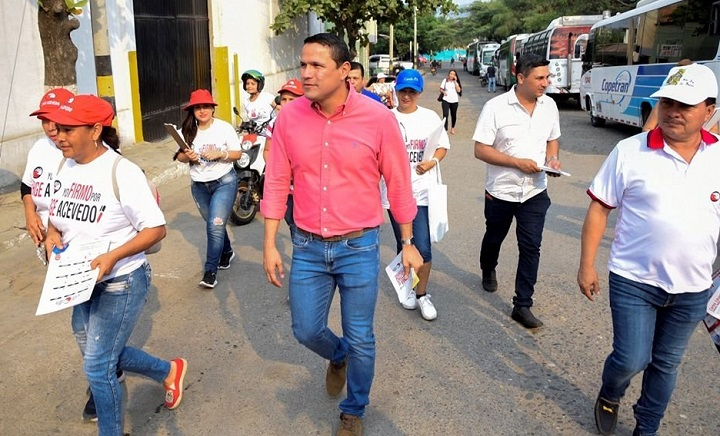

"Presunto Fraude en Votos Sacude la Ciudad de Cúcuta: Jorge Acevedo Bajo Investigación" Cúcuta, Colombia – Una noticia que ha conmocionado a la comunidad de Cúcuta en los últimos días es la presunta participación de Jorge Acevedo en un escandaloso caso de fraude en votos. Este controvertido asunto ha generado una gran cantidad de controversia y ha llevado a una investigación en curso por parte de las autoridades locales y nacionales. El asunto en cuestión se centra en las elecciones locales recientes que tuvieron lugar en Cúcuta. Según informes, se descubrieron irregularidades en el proceso electoral que podrían haber influido significativamente en los resultados. Jorge Acevedo, un candidato a un importante cargo público en la región, se encuentra en el centro de la polémica. Alegaciones de que su campaña estuvo involucrada en prácticas fraudulentas en el proceso de votación han llevado a la apertura de una investigación oficial. Las Acusaciones Las acusaciones que pesan sobre Jorge Acevedo y su campaña incluyen el acarreo de votantes, la compra de votos y la manipulación de los resultados electorales. Testigos y denunciantes afirman haber presenciado actos irregulares en los centros de votación, lo que ha generado inquietud sobre la integridad del proceso electoral en Cúcuta. El presunto fraude en votos que involucra a Jorge Acevedo en Cúcuta es un tema que seguirá siendo objeto de seguimiento y debate en los próximos días y semanas. A medida que avance la investigación, se espera que se arroje luz sobre la veracidad de las acusaciones y se determinen las consecuencias legales, si corresponde. La comunidad está ansiosa por conocer los resultados de la investigación y garantizar la transparencia en el proceso electoral de la ciudad.
¿La Respuesta de Jorge Acevedo? Jorge Acevedo ha negado rotundamente las acusaciones en su contra. En una declaración emitida el pasado martes, el candidato calificó las alegaciones de "infundadas" y "politizadas". Afirmó que su campaña se adhirió a todas las leyes y regulaciones electorales y se mostró dispuesto a cooperar plenamente con cualquier investigación que se lleve a cabo. Investigación en Curso Las autoridades locales y nacionales han iniciado una investigación exhaustiva sobre las acusaciones de fraude en votos. La Procuraduría General de la Nación y la Registraduría Nacional del Estado Civil están colaborando en este esfuerzo para garantizar una revisión imparcial y transparente del proceso electoral. Los resultados de esta investigación serán fundamentales para determinar si hubo fraude y, en caso afirmativo, quiénes fueron los responsables. Reacciones de la Comunidad La noticia sobre el presunto fraude en votos ha generado una amplia gama de reacciones en la comunidad de Cúcuta. Algunos ciudadanos han expresado su preocupación por la integridad del proceso electoral, mientras que otros han expresado su apoyo a Jorge Acevedo y han cuestionado la veracidad de las acusaciones en su contra. Las redes sociales también se han convertido en un campo de batalla virtual donde los partidarios y detractores discuten apasionadamente el tema. Conclusión El presunto fraude en votos que involucra a Jorge Acevedo en Cúcuta es un tema que seguirá siendo objeto de seguimiento y debate en los próximos días y semanas. A medida que avance la investigación, se espera que se arroje luz sobre la veracidad de las acusaciones y se determinen las consecuencias legales, si corresponde. La comunidad está ansiosa por conocer los resultados de la investigación y garantizar la transparencia en el proceso electoral de la ciudad.
Las Acusaciones de Fraude
Compra de Votos:
Testigos afirmaron que se les ofreció dinero y beneficios a cambio de votar por Acevedo en los centros de votación.
Acarreo de Votantes:
Se reportaron casos en los que se organizó el transporte de votantes hacia los lugares de votación, lo que podría haber influido en los resultados.
Manipulación de Resultados
: Se alega que hubo irregularidades en la contabilización de votos en varios distritos, lo que habría beneficiado a Acevedo.
Las acusaciones de fraude han generado tensiones entre los partidos políticos locales.
El partido opositor ha pedido una revisión exhaustiva de los resultados y ha solicitado la anulación de las elecciones en medio de las alegaciones de fraude.
Mientras tanto, los partidarios de Acevedo han defendido su inocencia y han acusado a sus oponentes de llevar a cabo una campaña de difamación.
Investigación en Curso
Las autoridades electorales y las agencias encargadas de hacer cumplir la ley han tomado medidas para investigar las alegaciones de fraude. Se están revisando pruebas, entrevistando testigos y auditando los resultados electorales en busca de irregularidades. El proceso de investigación se espera que sea riguroso y transparente, y sus resultados determinarán si se presenta un caso penal o se toman medidas legales contra aquellos responsables de fraude. En resumen, Jorge Acevedo, un político caleño, enfrenta acusaciones de fraude en las elecciones locales de Cúcuta debido a supuestas prácticas ilegales, como la compra de votos y el acarreo de votantes. El resultado de la investigación en curso será crucial para determinar si estas acusaciones son fundamentadas y, en caso afirmativo, qué consecuencias legales se derivarán de ellas. La situación continúa siendo objeto de controversia y seguimiento en la comunidad de Cúcuta.